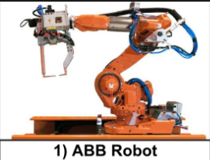

ABB is a global technology company that manufactures industrial robots used in automation and manufacturing. These robots are known for their speed, precision, and reliability.
| Model | Application | Payload |
|---|---|---|
| IRB 120 | Small Parts Assembly | 3 kg |
| IRB 1600 | Material Handling | 10 kg |
| IRB 2600 | Welding | 20 kg |
| IRB 6700 | Heavy Material Handling | 150–300 kg |
ABB robots help industries improve productivity, reduce production costs, increase product quality, and enhance workplace safety by automating repetitive and hazardous tasks.
Developed by: Your Name